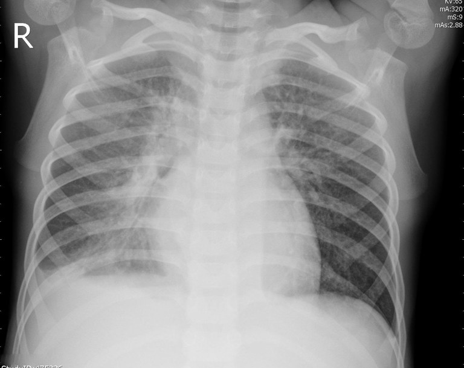
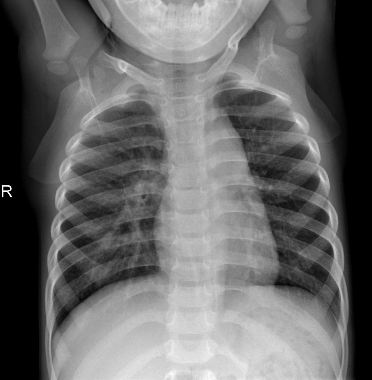
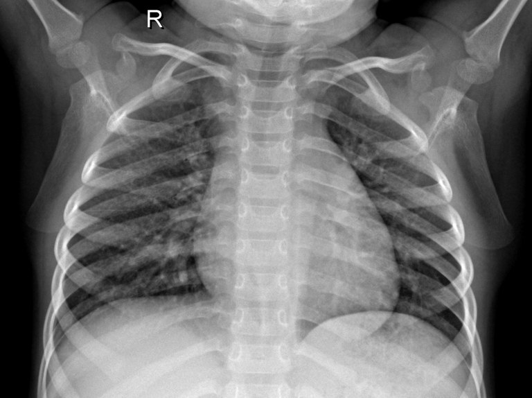
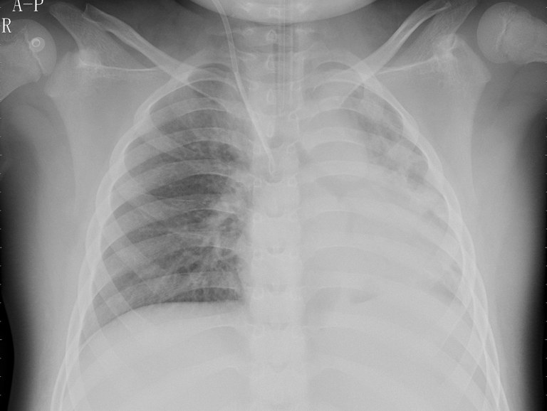
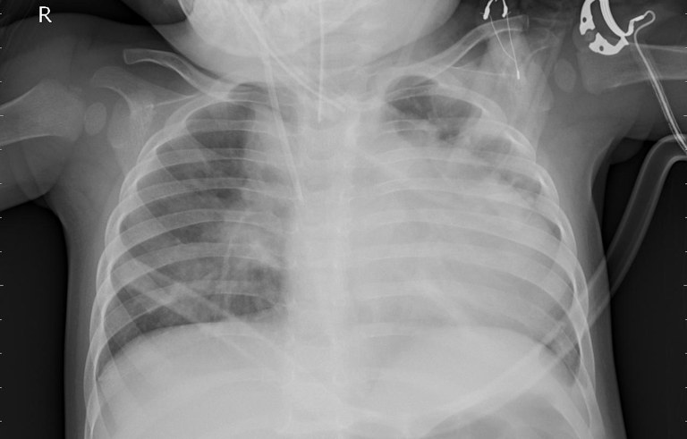

Кто точнее найдёт пневмонию на рентгене: вы или нейросеть?
Посмотрите на 20 снимков и для каждого решите, здоров человек или болен. В конце узнаете, сколько угадали вы и сколько — искусственный интеллект.
Сейчас на сайте демонстрационные снимки и модель. Настоящие появятся после обучения нейросети.
Четыре вопроса перед началом
Они нужны, чтобы сравнить результаты разных групп людей. Имя мы не спрашиваем.
Как найти пневмонию на снимке
Нейросеть училась на тысячах подписанных снимков. Вам нужно немного: сначала признаки, потом тренировка на четырёх снимках с ответами сразу.
Куда смотреть

- Лёгкие. Две тёмные области: в них воздух. Пневмонию ищем именно здесь.
- Сердце. Светлая тень справа от позвоночника на снимке. Она не болезнь.
- Позвоночник. Светлая полоса посередине.
- Рёбра. Светлые дуги поверх лёгких. Они не болезнь.
- Диафрагма. Граница лёгких снизу. У здорового человека она чёткая.
Признаки
- Здоров: оба лёгких тёмные и прозрачные, сквозь них видны тонкие сосуды, края сердца и диафрагмы чёткие.
- Пневмония: в лёгком есть белёсое «облако» или пятно, будто его заволокло дымкой. Чаще оно внизу или рядом с сердцем.
- Сравните стороны. Если одно лёгкое заметно светлее другого, это повод насторожиться.
- Размытый край. Рядом с очагом граница сердца или диафрагмы теряет чёткость.
- Не путайте болезнь с рёбрами, ключицами, трубками и датчиками: они тоже светлые, но это не лёгкие.
Пример: здоров и пневмония



Тренировка: снимок 1 из 4
Теперь настоящий тест. Правильные ответы покажем только в конце.
Снимок 1 из 20
Снимок не загрузился. Проверьте интернет.
Считаем результат…
Вы
– из 20
в среднем – на снимок
Нейросеть
– из 20
проверяет снимки…
| Показатель | Вы | Нейросеть |
|---|---|---|
| Нашли пневмоний | – | – |
| Ложных тревог (здоровых назвали больными) | – | – |
Изменилось ли ваше мнение?
Разбор по снимкам
| Снимок | Вы | Нейросеть |
|---|---|---|
| Верно | – | – |
Как это работает
Как учится нейросеть
Нейросеть — программа, которая учится на примерах, а не по правилам. Ей не объясняли, как выглядит пневмония. Ей показали больше пяти тысяч рентгеновских снимков с подписями «здоров» и «пневмония», и она сама нашла, чем они отличаются.
Мы взяли готовую нейросеть MobileNetV2, которая уже умеет различать обычные картинки, и доучили её на рентгенах в Google Colab.
Почему тест честный
20 снимков из теста нейросеть ни разу не видела во время обучения. Она отвечает на них впервые, как и вы.
Снимки взяты из открытой научной базы, которую врачи собрали специально для обучения ИИ. Это снимки детей, данные обезличены.
Где ИИ уже помогает врачам
В Москве нейросети помогают врачам проверять флюорографию, рентген, компьютерную томографию и маммографию. Через городскую платформу проходит около миллиона снимков в месяц (mos.ru, 2026).
ИИ не ставит диагноз сам. Он подсказывает врачу, на какой снимок посмотреть внимательнее, а решение принимает врач.
Проверьте нейросеть сами
Загрузите рентген грудной клетки, и нейросеть скажет, что она на нём видит. Снимок никуда не отправляется: всё считается прямо в вашем браузере.
Это учебный проект. Сайт не ставит диагнозы и не заменяет врача.